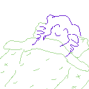

Last updated: 2023-02-27
See staff.html for information about this site’s author. The code for this site can be found on GitHub.
See staff.html for information about this site’s author.
The code for this site can be found on GitHub.

DIP switches were used by arcade games to allow settings like difficulty, cost per play, number of lives, etc. https://wiki.mamedev.org/index.php/DIP_Switches_in_MAME
More specifically, Hellsinker., the 2008 doujin shmup released by Ruminant’s Whimper, uses “TUNING DIPSW” as the alias for its settings menu.
This site took great inspiration (and CSS formatting) from Robert Nystrom’s Game Programming Patterns, an excellent resource.
Its main feature is a tutorial on how to make a fighting game from scratch in the library Pygame (writing in progress). If it goes well, and is even finished, I might even write and host other technical articles. At that time, I will have to move the (Table of) Contents around. But that is a lofty ambition for the distant future.